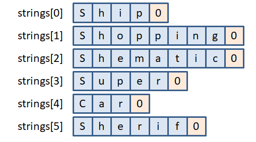
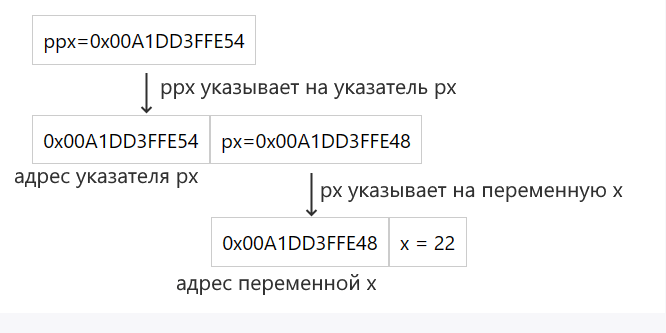
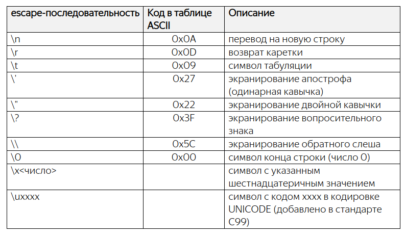
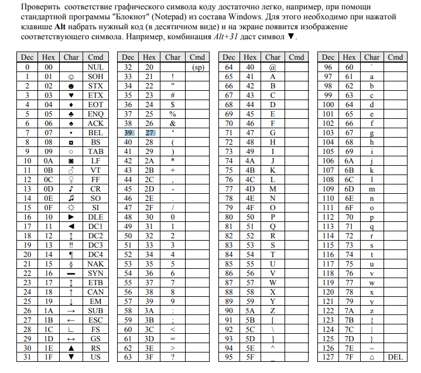
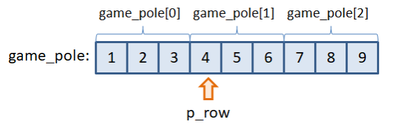
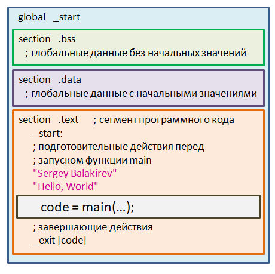
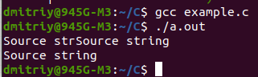
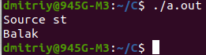

Работа с указателями
Оперативная память представляет собой набор ячеек памяти, каждая ячейка имеет размер 1 байт и имеет свой уникальный адрес.Когда объявляем переменную, тем самым выделяем под нее память.
В зависимости от типа переменная может храниться на разных количествах ячеек (char - 1 ячейка, int - обычно 4 ячейки, double - 8 ячеек) и адрес переменной будет равен адресу 1 ячейки выделенной под переменную.
Для того чтобы менять содержимое ячеек не обращаясь к ним по имени переменной, которая там хранится, служат указатели. Мы можем не знать какая переменная хранится в той или иной ячейке памяти, но с помощью указателя можем работать с памятью. Указатели служат для записи и считывания данных из произвольных ячеек памяти. Это еще называется прямым доступом к памяти.
Указатель представляет собой объект, значением которого служит адрес 1 байта (ячейки памяти) другого объекта (переменная, константа, указатель, массив, структура, функция) на который указатель ссылается.
Размер памяти (sizeof(*p)), выделяемый под указатель, не зависит от объекта на который указатель ссылается и определяется разрядностью системы. Если система 32-х разрядная, то указатели занимают 4 байта; если 64-х разрядная, то 8 байт.
Какой смысл в этих указателях?
Как пользоваться указателями относительно понятно, а вот зачем ими пользоваться, для чего они нужны вообще не понятно, не могу представить себе их практическое применение.Однажды тебе нужно будет написать программу, в которой переменная из функции main() передаётся в другую функцию и изменяется в ней. Используя обычные переменные ты обнаружишь, что они изменяются только в рамках функции, где были объявлены. То есть изменив значение переменной вне функции main(), в самой функции main() её значение останется неизменным, т.к в другой функции создаётся лишь копия передаваемой переменной. Чтобы всё-таки изменить значение переменной в другой функции используют указатель на данную переменную, работая напрямую с адресом переменной, а не с её копией
Объявление указателя
Для объявления указателя надо указать тип объекта, на который указывает указатель, и символ звездочки *.тип_данных* имя_указателя;Сам по себе указатель всегда хранит лишь адрес переменной и имеет фиксированный размер в памяти (4 байта для 32-х разрядных систем; 8 байт для 64-х разрядных систем). Тип, который мы указываем вначале, относится не к указателю, а к типу данных, с которыми его предполагается использовать.
Получение адреса данных или ссылка на объект
Указатель хранит адрес объекта в памяти компьютера. И для получения адреса к переменной применяется операция &.Эта операция применяется только к таким объектам, которые хранятся в памяти компьютера, то есть к переменным и элементам массива. Не совсем понятно, то есть функции, имя массива, структуры и прочие объекты не имеют адрес в стеке? И к ним нельзя применять знак амперсанда?
Пример:
#include <stdio.h>
int main(void)
{
int x = 10; // определяем переменную
int *p; // определяем указатель, пока ни на какой объект не ссылается.
p = &x; // указатель получает адрес переменной (ссылается на эту переменную)
printf("%p \n", p); //получаем значение указателя, то есть адрес на который ссылается указатель. У меня 0x7ffe2e07853c
printf("x = %d \n", *p); //получаем значение объекта через операцию разыменования
return 0;
}
Что важно, переменная x имеет тип int, и указатель, который указывает на ее адрес тоже имеет тип int. То есть должно быть соответствие по типу.
Какой именно адрес имеет переменная x? Для вывода значения указателя можно использовать специальный спецификатор %p:
printf("%p \n", p);
Стоит отметить, что при выводе адреса указателя функция printf() ожидает, что указатель будет представлять void*, то есть указатель на значение типа void. Поэтому некоторые компиляторы при некоторых настройках могут при компиляции отображать предупреждения. И чтобы было все канонически правильно, то переданный указатель нужно преобразовать в указатель типа void *:
printf("%p \n", (void *)p);
Получение значения по адресу или операция разыменования
так как указатель хранит адрес, то мы можем по этому адресу получить хранящееся там значение, то есть значение переменной x. Для этого применяется операция * или операция разыменования (dereference operator). Результатом этой операции всегда является значение объекта, на который указывает указатель.
printf("x = %d \n", *p);
Используя полученное значение в результате операции разыменования мы можем присвоить его другой переменной:
int y = *p; // присваиваем переменной y значение по адресу из указателя pТакже используя указатель, мы можем менять значение по адресу, который хранится в указателе:
int x = 10;
int *p = &x;
*p = 45;
printf("x = %d \n", x); // 45
Так как по адресу, на который указывает указатель, располагается переменная x, то соответственно ее значение изменится.
Если записать указатель в двух формах:
p = 0; // указатель перемещаем на ячейку с адресом 0 *p = 0; // в ячейку на которую указывает указатель p записываем число 0.то в первой строчке присваивается адрес, с которым, затем, этот указатель может работать, а во второй заносим значение 0 в ячейку памяти с адресом 0.
Иницилизация указателя
Можно объединить две строчки:int *p; p = &x;в одну следующим образом:
int *p = &x; // сразу объявляем указатель p и направляем его на переменную x
На первый взгляд, кажется, что мы используем форму записи указателя со звездочкой, а значит, присваиваем ему не адрес, а заносим некоторое значение по какому-то адресу. Но это не так. Здесь определена операция инициализации указателя, а не присваивания. Когда мы говорили о переменных, то я отмечал этот факт. Если в момент объявления переменных мы им сразу что-либо присваиваем, то отрабатывает операция инициализации, которая, в общем случае, отличается от операции простого присваивания. Здесь, как раз тот самый случай. При инициализации указателя ему присваивается адрес, а звездочка записана для объявления переменной p как указателя, а не просто как обычной переменной. Инициализатор это прекрасно «понимает» и заносит в указатель адрес переменной x. Этот момент также следует понимать. Он часто используется на практике.
Присваивание указателей. Приведение типов указателей
Пусть имеются переменные:int arg = 7; int *ptr_arg, *ptr; ptr_arg = &arg;Хотим чтобы и второй указатель ptr тоже ссылался на переменную arg. В данном конкретном случае можно поступить двумя способами. В первом также взять адрес переменной и присвоить второму указателю:
ptr = &arg;
А во втором, присвоить одному указателю значение другого:
ptr = ptr_arg;
Немного модифицируем программу и у второго указателя ptr поменяем тип данных с int на char:
#include <stdio.h>
int main(void)
{
int arg = 777;
int *ptr_arg;
char *ptr;
ptr_arg = &arg;
ptr = ptr_arg;
return 0;
}
При компиляции увидим предупреждение, что мы пытаемся присваивать разные несовместимые типы, с которыми работают указатели:
assignment to 'char *' from incompatible pointer type 'int *'Однако бывают (и не редко) ситуации, когда действительно в программе нужно указателю одного типа данных присвоить значение указателя, работающего с другим типом данных. В этом случае следует явно прописать операцию приведения типов для указателей. Делается это следующим образом:
ptr = (char *)ptr_arg;
То есть, прописываются круглые скобки и в них указывается тот тип указателя, к которому он приводится. Тогда компилятор «поймет», что программист сознательно делает такую операцию и не выдает никаких предупреждений. Программа, разумеется, будет работать без каких-либо изменений.
Примеры:
#include <stdio.h>
int main(void)
{
char ch = 'd';
char* ptr = &ch;
int * ptr_i = (int *)&ptr;
*ptr_i = 10;
char *ptr_ch = (char *)ptr_i;
for (int i = 0; i < 4; i++)
{
printf("%d ", ptr_ch[i]);
}
printf("\n");
printf("%p %p\n", ptr_i, ptr);
printf("%p %p\n", &ptr_i, &ptr);
return 0;
}
Ответы:
команда *ptr_i = 0; запишет один 0, в ячейку памяти с адресом ptr_i //неверно
указатели ptr и ptr_i содержат один и тот же адрес //верно, но почему непонятно
в строчке int * ptr_i = (int *)ptr; не хватает амперсанда (&) перед именем указателя ptr
команда *ptr_i = 0; последовательно запишет четыре 0, начиная с ячейки памяти с адресом ptr_i
указатели ptr и ptr_i ссылаются на одну и ту же область памяти
программа имеет потенциальную уязвимость, так как указатель ptr_i работает с 4 байтами (обычно), а ptr ссылается на выделенную область в один байт
Тип указателя void
Приведение типов для указателей следует прописывать всегда, когда типы различаются, кроме одного случая, когда указатель
объявлен с обобщенным типом void:
void *p;
Тогда мы можем совершенно свободно ему присваивать адреса любых других указателей:
p = ptr;
И, наоборот, его присваивать любым другим:
ptr_arg = p;
Компилятор в этих случаях не будет выдавать никаких предупреждений. Фактически, этот тип void* введен в язык Си исключительно
для хранения адресов и их последующего присваивания другим указателям. При этом сам указатель с типом void* нельзя использовать для работы с ячейками памяти. Непонятно, что значит это предложение.
Следует учитывать, что к void-указателю мы НЕ можем применить операцию разыменования и тем самым получить значение под адресу, который хранится в этом указателе. Поэтому для получения значения надо приводить к указателю соответствующего типа:
int x = 123;
int *ip = &x; // указатель хранит адрес объекта int
void *vp;
vp = ip;
printf("Value: %d\n", *((int *)vp));
Одно из распространенных применений void-указателя - это вывод адреса на консоль:
printf("vp: %p\n", vp); // получаем адрес, который хранится в указателе vp
printf("ip: %p\n", (void*)ip); // преобразование к типу void* - получаем адрес из указателя ip
Если мы хотим получить адрес из указателя другого типа (не void), то, в соответствии со стандартами, его сначала надо преобразовать к типу void*.
Указатель хранит адрес переменной, и по этому адресу мы можем получить значение этой переменной. Но кроме того, указатель, как и любая переменная, сам имеет адрес, по которому он располагается в памяти. Этот адрес можно получить также через операцию &:
#include <stdio.h>
int main(void)
{
int a = 10;
int *pa = &a;
printf("address of pointer=%p \n", (void*)&pa); // адрес указателя
printf("address of pointer без приведения=%p \n", &pa);//обычно можно и без (void*)
//printf("address of pointer через u=%u \n", (void*)&pa); //format ‘%u’ expects argument of type ‘unsigned int’, but
// argument 2 has type ‘void *’
printf("address in pointer=%p \n", (void*)pa); // значение указателя = адрес, который хранится в указателе =
//адрес переменной a
printf("address in pointer без приведения=%p \n", pa);
printf("value on pointer=%d \n", *pa);
return 0;
}
Получен ответ:
address of pointer=0x7fff508dd780
address of pointer без привидения=0x7fff508dd780
address in pointer=0x7fff508dd77c
address in pointer=0x7fff508dd77c
value on pointer=10
Проблемы, сокрытые в указателях
- указатель ссылается на произвольную (не выделенную) область памяти и в нее происходит запись некоторого значения;
- в программе динамически выделяется память (с помощью функции malloc), но не освобождается (утечка памяти).
#include <stdio.h>
int main(void)
{
int *ptr;
*ptr = 1;
return 0;
}
Такая программа скомпилируется и запустится. Но, очень вероятно, что завершится с ошибкой.Очевидно, мы пытаемся записать число 1 в некоторую область памяти, которая может быть отведена под какие-то другие задачи. Нельзя вот так запросто, куда угодно что-либо записывать. Сначала нужно запросить у операционной системы свободную область памяти, сказать, что мы ее будем использовать для нужд программы, а уже потом записывать туда данные. Только так. Никак иначе. И этот процесс запроса памяти называется в программировании выделением памяти. Когда мы объявляем ту или иную переменную, то как раз автоматически запускается этот процесс выделения памяти. Поэтому в ячейки, занятые переменной, мы совершенно спокойно можем что-либо записывать и считывать.
Константа NULL
Но все же, очень часто бывают ситуации, когда в нашем распоряжении имеется некий указатель и нам бы хотелось знать: указывает ли он на выделенную область, с которой можно работать, или на произвольную, то есть, указатель не был инициализирован? В языке Си нет встроенного механизма, который бы позволял гарантированно отвечать на этот вопрос. Но один прием довольно часто используется на практике. Ничто не мешаем нам договориться, если указатель принимает некоторое строго предопределенное значение, значит, он еще не был инициализирован. А иначе, ссылается на выделенную область памяти. Что может здесь выступать в качестве предопределенного значения? В языке Си для этого используется специальная константа NULL, определенная с помощью директивы define в заголовочном файле stdio.h:int *ptr = NULL;Для разных ОС макрос NULL может принимать разные значения. В моем случае – это нулевой указатель, заданный в виде:
#define NULL ((void *)0)То есть, фактически, мы присваиваем указателю нулевой адрес, который будет означать, что он пока не ссылается на выделенную область и записывать данные в эти ячейки не нужно. Проверку этого условия можно записать так:
#include <stdio.h>
int main(void)
{
int arg = 5;
int *ptr = NULL;
if(ptr != NULL)
*ptr = 1;
return 0;
}
После запуска программа выполнится и завершится без ошибок. При этом команда «*ptr = 1;» выполнена не будет. Если же изменить
значение указателя:
ptr = &arg;
то условие станет истинным и значение переменной arg будет изменено на единицу.
Вот так с помощью предопределенной константы NULL можно контролировать значение указателя на выделенную область памяти. Хотя, конечно, этот прием не дает гарантии. Вполне может возникнуть ситуация, когда указатель не будет равен NULL и при этом ссылаться на невыделенную область. Но это уже ложится на плечи программиста.
Пример:
Операции в адресной арифметике только над целочисленными числами. В них должны фигурировать или целочисленные литералы или
целочисленные переменные. Другие типы здесь использовать недопустимо. Также нельзя использовать операции умножения и деления.
Исключение составляет только одна операция вычисления разности между двумя указателями, когда в операндах не используются
целочисленные типы. Причем эта операция имеет смысл исключительно с элементами одного массива. Давайте посмотрим, как она
работает на следующем примере:
res = (6487814 – 6487808) / 2 = 3
Примеры:
*(ptr++)
Так как инкремент записан в постфиксной форме, то вначале мы получаем текущее значение ptr, к нему применяется операция * и
только после этого адрес увеличивается на единицу.
А вот если инкремент записать в префиксной форме:
*(++ptr)
Здесь сначала адрес указателя увеличивается на единицу и только после этого срабатывает следующая операция разыменования.
Поэтому байты будут прочитаны со сдвигом вправо на одну ячейку.
Имеется следующий фрагмент программы:
А вот если эту же строчку записать с круглыми скобками следующим образом:
int x = *(ptr + 1);
то ситуация кардинально меняется. Сначала будет увеличен адрес на единицу, мы перейдем к следующей ячейке переменной g, и переменной x будет присвоено значение этой второй ячейки. В итоге она будет принимать значение 70.
И раз еще давайте посмотрим на работу команды:
int x = *ptr++;
Такая запись указателя с операцией инкремента и разыменованием часто используется в практике программирования. В итоге мы
здесь читаем значение из текущей ячейки, и только после этого адрес указателя увеличивается на единицу. Но, если мы это же
выражение запишем в виде:
int x = (*ptr)++;
то операция инкремента будет применена уже к данным в первой ячейке переменной g. В итоге переменной x присвоится начальное
значение из первой ячейки, а переменная g станет содержать число:
476790 = 118 + 256 ∙ 70 + 256^2 ∙ 7
Объясните, пожалуйста, по какому алгоритму разложено число 476789 = 117 + 256 ∙ 70 + 256^2 ∙ 7? С точки зрения системы
счисления? То есть так можно любое 10- тичное число разложить в таком представлении, есть формула? И как это привязано к
адресу? Ведь по адресу одна ячейка памяти может хранить 255 различных значений от 0 до 1111 1111 в двоичном представлении.
Почему именно первая ячейка, адрес которой является указатель, хранит 0111 0101, то есть 117? Как этот перевод осуществляется,
на уровне компилятора? Не ужели так жёстко связаны адреса и сами октеты байтов с хранимым числом? Вопрос идёт про 4 байтный
int. Есть ли другие источники объясняющие это? К чему такой вопрос. Когда мы переводим 476789 в 32 bit u то получаем вот такое
двоичное число 0000 0000 0000 01110100011001110101. Но первый актер не равен 0111 0101.
Одна ячейка может хранить 256 различных значений, и каждый байт можно представить как цифру из системы счисления с основанием
256. Перевод из десятичной системы осуществляется точно так же, как и в любую другую - делением нацело. А такой порядок связан
с тем, что архитектура x86 (и x86-64) использует little-endian порядок байтов. Это означает, что младший байт (в котором
записан конец числа) будет иметь меньший номер, и на самом деле 32-битное число 476789 = [0000 0000] [0000 0111] [0100 0110]
[0111 0101] будет записано как:
117 70 7 0
которые в точности определяют число:
476789 = 117 + 256 ∙ 70 + 256^2 ∙ 7
Константный указатель, то есть, с неизменным начальным адресом
Тогда ему можно присвоить начальный адрес только в момент инициализации. Обычная операция присваивания ptr_ar = ar; уже
недопустима.
ptr_ar++;
ptr_2[0] = 10;
Соответственно, чтобы нельзя было «схитрить» и обойти константное объявление указателя, язык Си накладывает некоторые
ограничения на его использование. В частности, нельзя обычному указателю присвоить адрес константного указателя:
short * ptr_2 = ptr_1;
short * ptr_2 = ar;
Часто ключевое слово const можно встретить при объявлении глобальных массивов из констант, например:
#include <stdio.h>
const int marks[] = {1, 2, 3, 4, 5};
int main(void)
{
// программа, использующая массива marks
return 0;
}
Либо при определении параметров функции, как, например, это сделано в функции printf():
int printf(const char *format, ...);
Пример:
Ключевое слово const с переменными
code = 15; // ошибка
И вот здесь обратите внимание, что переменная code – это, по-прежнему, обычная переменная с той лишь разницей, что мы не можем
изменить ее значение в процессе работы программы. Неправильно воспринимать ее как константу. На уровне машинных кодов – это
такая же переменная, как и любая другая. А ключевое слово const прописано исключительно для компилятора. В процессе трансляции
он будет контролировать, чтобы переменная не меняла свое значение. То есть, const – это просто указание для компилятора, в
машинные коды оно никак не переводится.
В связи с этим, константные переменные следует все же рассматривать как переменные. Например, их по-прежнему, нельзя
использовать в метках case условного оператора switch:
const int code = 13;
Тип данных у всех значений массива единый. Смешанных типов здесь нет.
Строго говоря, в языке Си нет структуры данных под названием массив! То, что здесь понимается под массивом – это просто
фрагмент области памяти, в которую можно записывать произвольные данные, в нашем случае через переменную f. То есть, здесь нет
программной оболочки над этими данными, которая бы контролировала корректность индексов, или позволяла бы присваивать один
массив другому и так далее. Массив – это попросту ячейки памяти идущие друг за другом без пропуска внутри под другие
переменные. Больше ничего! Вся ответственность за правильное использование этого фрагмента с данными лежит на плечах
программиста.
Дальше я, тем не менее, буду употреблять слово массив, т.к. это устоявшаяся терминология языка. Но понимать его здесь следует
не как полноценную структуру данных, а просто как непрерывную область памяти для хранения множества однотипных значений.
Если уж вам действительно понадобилось объявлять массивы с размерами на основе значений переменных, то для этого лучше
использовать, так называемые, динамические массивы.
Индексация массивов начинается с нуля, последний элемент имеет номер, равный количеству элементов когда объявляли массив
минус один.
int x = marks[2]; - здесь берем значение 3 элемента marks и копируем в переменную x.
int marks[TOTAL_MARKS] = {1, 2, 3, 4, 0, 0, 0, 0, 0, 0, 0, 0, 0};
То есть, после объявления массива прописывается знак равно и далее в фигурных скобках через запятую перечисляются значения, которые будут записаны в соответствующие элементы массива. Можно короче было:
int marks[TOTAL_MARKS] = {1, 2, 3, 4};
Тогда в первые четыре элемента будут занесены числа 1, 2, 3 и 4, а вот остальные становятся равными 0. Так работает
инициализатор. Если мы указываем хотя бы одно начальное значение, то все остальные не указанные элементы массива
автоматически становятся равными нулю.
Можно так определить и инициализировать массив:
Наконец, в стандарте C99 появился еще один способ инициализации с указанием индекса инициализируемого элемента. Например:
Конечно, использование инициализаторов увеличивает время выполнения программы, так как в элементы массива дополнительно
выполняется копирование данных. Поэтому пользоваться этим инструментом следует осмотрительно. Если массив небольшой длины (до
1000 элементов), то его инициализация не сильно скажется на скорости работы. Однако при большем размере могут появляться
заметные задержки. Особенно, когда инициализация происходит внутри функций. При каждом ее вызове будет создаваться массив и
инициализироваться некоторыми значениями. Здесь следует хорошо подумать, действительно ли в программе нужна эта инициализация.
Поэтому, чаще всего, инициализацию можно встретить при глобальном определении массива (вне каких-либо функций). Тогда его значения будут инициализироваться один раз в момент загрузки программы. Из-за этого при глобальных объявлениях можно в инициализаторе использовать только константные выражения времени компиляции. Переменные или вызовы функций подставлять сюда уже недопустимо. А вот при локальной инициализации вполне можно использовать и переменные и функции, например:
Примеры инициализация массивов:
Адресная арифметика
Значение указателя меняется на размер типа данных, для которого он определен.
int g = 4;
int *ptr = &g;
printf("ptr = %u\n", ptr); //выведет ptr = 6487832
ptr++;
printf("ptr = %u\n", ptr); //выведет ptr = 6487836
Когда мы работаем с указателями, а не с обычными переменными, то целочисленные арифметические операции выполняются в
соответствии с правилами адресной арифметики. В частности, увеличение на единицу означает, что нам нужно перейти к следующей
порции данных в памяти компьютера, а не к следующей ячейке. Именно поэтому адрес указателя увеличивается на размер типа
данных, для которого он объявлен. В нашем примере – это тип int, который занимает 4 байта. Поэтому увеличивая на единицу
значение адреса указателя ptr, мы получаем прибавку на эти четыре байта. Отсюда и получается такой результат.
#include <stdio.h>
int main(void)
{
short ar[10];
short *ptr = ar;
short *p = &ar[3];
printf("ptr = %u, p = %u\n", ptr, p);
int res = p - ptr;
printf("res = %d\n", res);
return 0;
}
Смотрите, здесь объявлен массив ar и два указателя с инициализацией на адрес первого элемента и третьего элемента массива ar.
После этого вычисляется разность между указателями p и ptr и результат заносится в обычную целочисленную переменную res.
После запуска программы увидим результат:
ptr = 6487808, p = 6487814
res = 3
Почему видим значение 3 в переменной res? Конечно, здесь выполняется адресная арифметика, которая возвращает расстояние в
памяти между этими двумя элементами одного массива, причем расстояние выражено не в байтах, а в типе short, который занимает 2
байта. Фактически, значение res вычисляется по формуле:
ptr_b - ptr_a //это разница между указателями
ptr_a += b * 5 //простое перемещение указателя вперёд по памяти
ptr_b += ptr_a //нет. указатели нельзя складывать
ptr_b -= ptr_a //в сам указатель нельзя сохранять разницу
--ptr_a //перемещение указателя на предыдущий элемент
ptr_b + ptr_a //нет
ptr_a *= a //нет, так нельзя делать
ptr_a -= d //нет, так как d - число типа double
Приоритеты операций при работе с указателем
for(int i = 0;i < sizeof(g); ++i)
printf("%d ", *ptr++);
Здесь у нас две унарные операции ++ и * применяются к указателю ptr. Спрашивается, в каком порядке будут происходить
вычисления? Здесь следует вспомнить, что приоритет унарных операций убывает справа-налево. Поэтому сначала идет инкремент в
постфиксной форме и только затем операция разыменования. Это эквивалентно такой записи:
for(int i = 0;i < sizeof(g); ++i)
printf("%d ", *++ptr);
то это будет эквивалентно записи:
int g = 476789;
int *p = &g;
*p += 1;
Спрашивается, как будет работать последняя строчка? Рассуждаем здесь подобным образом. Так как операция * является унарной, то
она обладает большим приоритетом, чем операция +=. Поэтому здесь сначала будет прочитано значение переменной g, затем, оно
увеличивается на единицу и результат снова заносится в те же ячейки памяти, где расположена переменная g. В итоге, значение
указателя p не изменится, а переменная g станет на единицу больше.
int g = 476789;
char *ptr = (char *)&g;
int x = *ptr + 1;
printf("x = %d\n", x);
return 0;
}
И спрашивается, чему будет равно значение переменной x? То есть, как отработает операция «*ptr + 1»? Очевидно, здесь приоритет
унарной операции * выше, чем у бинарной операции сложения. Поэтому, сначала будет прочитано значение из первого байта
переменной g – это число 117, а затем, к нему будет прибавлена единица. В итоге x будет содержать число 118.
Адрес Значение
ptr+0 0111 0101
ptr+1 0100 0110
ptr+2 0000 0111
ptr+3 0000 0000
Пример использования адресной арифметики
Пусть в программе объявляется целочисленная переменная типа int и ставится задача просмотреть побайтно содержимое этой
переменной в памяти компьютера. Сделать это можно следующим образом:
#include <stdio.h>
int main(void)
{
int g = 476789;
char *ptr = (char *)&g;
for(int i = 0;i < sizeof(g); ++i) {
printf("%d ", *ptr);
ptr++;
}
return 0;
}
Смотрите, мы здесь формируем указатель, который работает с байтовыми данными, то есть, с отдельными ячейками памяти. Затем,
ему присваивается адрес целочисленной переменной g и в результате он ссылается на первый байт этой переменной. После этого в
цикле for осуществляется вывод текущего значения байта на экран и указатель ptr увеличивается на единицу. Так как тип у него
прописан как char, то операция инкремента увеличит адрес ptr ровно на один и мы перейдем к следующему байту. Соответственно,
на следующей итерации будет выведено значение очередного байта и так для всех ячеек переменной int. В итоге на экране увидим
числа:
Ключевое слово const при объявлении указателей
Пример: const short *ptr_ar;
Ключевое слово const означает, что через указатель ptr_ar нельзя менять значения в ячейках памяти. А вот адрес, как раз, мы
вполне можем менять. Например:
#include
Вывод:
x=6, ptr_x=6
адрес x=0x7ffdee423cdc
Видно, что по значение по указателю (*ptr) менять не можем, но напрямую если обращаться к объекту, на который ссылается ptr, никаких проблем нет.
И для чего тогда перед указателем писать const - непонятно.
short * const ptr_ar = ar;
Также недопустимы все остальные операции изменения адреса, например:
А вот изменение значений и считывание вполне возможно:
ptr_ar[0] = 10;
short x2 = ptr_ar[1];
Объявим в программе массив и два указателя на него:
short ar[] = {4, 3, 2, 1, 5, 6, 7};
const short * ptr_1 = ar;
short * ptr_2 = ar;
Как видите, первый указатель объявлен с ключевым словом const, а второй без него. Соответственно, с помощью первого указателя
можно только читать данные из массива, а с помощью второго и читать и менять. Например:
int a = ptr_1[0];
Изменили значение первого элемента массива и это изменение было прочитано с помощью первого указателя ptr_1. То есть, ключевое
слово const накладывает ограничения не на уровне ячеек памяти, а на уровне указателя, у которого оно прописано. В данном
случае, компилятор контролирует, чтобы не происходило записи в ячейки памяти с помощью указателя ptr_1. Если такое где-либо
встречается, то компиляция прерывается и выдается ошибка. Если же указатель ptr_1 в программе используется только для
чтения, то программа успешно переводится в машинные коды.
А вот наоборот можно:
const short * ptr_1 = ptr_2;
#include <stdio.h>
int main(void)
{
int* ptr; //обычный указатель
const int* ptr_cnst; //неизменяемое значение
int * const cnst_ptr; //константный указатель (неизменный начальный адрес)
//неизменяемый адрес//
*cnst_ptr = 77; //значение можно менять
//cnst_ptr = ptr; //error: assignment of read-only variable ‘cnst_ptr’
//cnst_ptr++; //error: increment of read-only variable ‘cnst_ptr’
//Обычный указатель
//ptr = ptr_cnst; //warning: assignment discards ‘const’ qualifier from pointer target type Почему?
ptr = cnst_ptr;
//Неизменяемое значение
--ptr_cnst;
//*ptr_cnst = 10; //error: assignment of read-only location ‘*ptr_cnst’
ptr_cnst = ptr;
return 0;
}
В заключение этого занятия пару слов о возможности использования ключевого слова const при объявлении обычных переменных. В
целом, здесь все то же самое. Если записать прописать const в самом начале:
const int code = 13;
то переменную можно только инициализировать, но нельзя присваивать ей какие-либо значения:
То есть, операция присваивания становится недопустимой для таких переменных. Только операция инициализации.
#include <stdio.h>
int main(void)
{
const int code = 13;
int item = 1;
switch(item) {
case code:
printf("error");
}
return 0;
}
Так как на момент компиляции программы значение переменной code не определено. Число 13 ей будет присвоено только при
выполнении программы и размещения переменной code в памяти устройства. Правда, такие переменные допускается использовать при
объявлении массивов:
char str[code];
Здесь включается механизм создания массивов переменной длины на основе переменных. Делать так крайне не рекомендуется.
Машинный код программ, использующие такие объявления, может получаться крайне неэффективным, а значит, сводит на нет главное
достоинство языка Си – скорость исполнения программы и полный контроль за использованием ресурсов. Поэтому такую конструкцию
лучше заменить на классическую:
#define SIZE 13
char str[SIZE];
============================================================================================================================
Массивы
Синтаксис для объявления массива:
<тип элементов массива> <имя массива>[<число элементов массива>];
Способы объявлений массивов
До стандарта C99 число элементов массива (в квадратных скобках) можно было определять только константными целочисленными
выражениями. Например, так:
// Корректные объявления массивов
double f[30];
char buffer[SIZE_BUFFER];
int marks[13];
short ar[8 * 5];
char bytes[sizeof(double)];
// Некорректные объявления
int n = 5;
float func[21.5]; // вещественное количество элементов
int array[n]; // нельзя было до стандарта C99
int null_ar[0]; // размер должен быть больше нуля
Обратите внимание, при определении размера массива вполне допустимо использовать арифметические операции и операцию sizeof. А
вот возможность использования целочисленных переменных появилась только в стандарте C99, а также понятие массивов переменной
длины, размеры которых можно определять через целочисленные переменные. Однако не все последующие стандарты языка Си
поддерживают такой способ объявления, или определяют его как необязательный. В связи с этим использование переменных при
объявлении массивов лучше избегать, так как переносимость программы в этом случае ставится под вопрос.
Индексация массивов, запись и чтение значений в массивы
marks[2] = 4; - здесь в 3 элемент массива записали 4
Определение количества элементов массива
Как вы помните, sizeof возвращает размер переменной или типа данных в байтах. Но, применительно к массиву, она возвращает
размер области памяти (также в байтах), которая под него выделена. Например:
size_t bytes_marks = sizeof(marks);
printf("%zu\n", bytes_marks);
тип переменной size_t. В данном случае – это переопределение целочисленного типа unsigned long long. По сути, имя
size_t введено для универсальной записи программы при использовании функций или операций подобной sizeof. В разных реализациях
языках и на разных платформах имя size_t может быть связано с разными целочисленными типами. Но всегда является целочисленной
и беззнаковой. Далее, мы выводим значение переменной bytes_marks, используя спецификатор %zu, специально введенный для типа
size_t.
Итак, размер массива в байтах мы легко можем определить. Теперь, чтобы вычислить число его элементов, нужно этот общий размер разделить на число байт, занимаемых одним элементом этого массива. Очевидно, сделать это можно так:
size_t size_marks = sizeof(marks) / sizeof(marks[0]);
printf("%zu\n", size_marks);
Инициализация массивов
Если в момент объявления массива мы знаем, какие данные он должен содержать, то их можно сразу прописать следующим образом:
int coords[] = {10, -2, 30};
Массив coords будет состоять из трех элементов, т.к. в инициализаторе указано три значения.
short digits[10] = {-1, [2] = 5, 18, [9] = -1};
В результате увидим строку из значений: -1 0 5 18 0 0 0 0 0 -1
Внутри фигурных скобок указали индекс массива и присволи ему значение.
#include <stdio.h>
#include <stdlib.h>
#define TOTAL_MARKS 13
int month[] = {31, 28, 31 * 2, 30, 31, 30, 31, 31, 30, 31, 30, 31};
int main(void)
{
int val = -5;
int marks[TOTAL_MARKS] = {1, 2, 3, 4, val, abs(val), 0, 0, 0, 0, 0, 0, 0};
for(int i = 0; i < TOTAL_MARKS; ++i)
printf("%d ", marks[i]);
return 0;
}
Но, как я уже отмечал, инициализацию массивов внутри функций следует избегать, кроме, может быть, функции main(), т.к. она, как правило, вызывается только один раз в процессе работы программы.
short ar_1[2][3] = {{1, 2, 3}, {3, 4, 6}}; //верно
float ar_4[][3] = {1, 2, 3, 4, 5, 6}; //верно
int ar_6[2][3] = {{1, 2}, {3, 4}, {5, 6}}; //неверно. Перебор строк
int ar_3[][3] = {{1, 2, 3}, {4, 5, 6}}; //верно
short ar_2[2][3] = {1, 2, 3, 4, 5, 6}; //верно
long ar_5[2][] = {{1, 2, 3}, {4, 5, 6}}; //неверно, первый размер может отсутствовать, но второй нет
int ar_7[3][3] = {{1, 2}, {3, 4}}; //верно
Имя массива как указатель
Имя массива в языке Си является указателем на массив и содержит адрес первой ячейки, начиная с которой хранятся элементы этого массива.
Потому значение первого элемента массива можно получить с помощью операции разыменования:
#include <stdio.h>
int main(void)
{
short ar[] = {4, 3, 2, 1, 5, 6, 7};
short a_1 = *ar; // первый элемент массива = ar[0]
short a_4 = *(ar+3); //= 1, Можно используя адресную арифметику, переходить к произвольному элементу и работать с ним.
printf("a_4=%d\n", a_4);
printf("2[ar]=%d\n", 2[ar]); //=2< 2[ar] - это ar[2], одно и тоже
short *ptr_ar;
ptr_ar = ar; // или ptr_ar = &ar[0]; ptr_ar на адрес массива ar
size_t len_1 = sizeof(ar); // len_1 = 14
size_t len_2 = sizeof(ptr_ar);
printf("sizeof(ar)=%ld, sizeof(ptr_ar)=%ld\n", sizeof(ar), sizeof(ptr_ar)); //sizeof(ar)=14, sizeof(ptr_ar)=8
//arr++; //note: each undeclared identifier is reported only once for each function it appears in
return 0;
}
|
Чем же отличается указатель (имя массива) на массив от обычного указателя? В целом, только двумя моментами:
1. операция sizeof для имени массива (sizeof(ar) возвращает число байт, занимаемых массивом в памяти устройства: sizeof(ar)=14
sizeof для обычного указателя (sizeof(ptr)) возвращает количество байт на хранение адреса объекта. Для моей 64-разрядной = 8 байт.
2. Адрес указателя на массив (имя массива) формируется в момент его объявления (размещения в памяти устройства) и остается неизменным на
протяжении работы программы.
Если попробуем изменить адрес указателя:
ar++;
При компиляции увидим сообщение об ошибке. Так делать нельзя. И, вообще, менять адрес указателя на массив запрещено. А вот с
обычным указателем такая операция вполне допустима:
ptr_ar++;
Никаких ошибок и программа успешно выполняется.
Можно обращаться к произвольным элементам массива, используя указатель с квадратными скобками, аналогично массиву:
short a_3 = ptr_ar[2]; // используем указатель ptr_ar индексом, запись аналогична ar[2]
оператор [] – это обычная синтаксическая конструкция, подменяющая собой адресную арифметику вида:
ar[indx] = *(ar+indx)
То есть, операция индексирования – это не операция над массивами, а над адресами и не более того. Мало того, в общем виде ее можно представить так:
a[b] = *(a+b)
Массив указателей
Ссылки: Массивы указателей, строки и многоуровневая адресацияУказатели сами по себе представляют значения, которые можно хранить в массивах. То есть в итоге получится массив указателей.
Массив указателей определяется одним из трех способов:
тип *имя_массива [размер]; тип *имя_массива [] = инициализатор; тип *имя_массива [размер] = инициализатор;Используем все эти способы:
int array[] = {1, 2, 3, 4};
int *p1[3];
int *p2[] = { &array[1], &array[2], &array[0] };
int *p3[3] = { &array[3], &array[1], &array[2] };
Массив указателей p1 состоит из трех элементов, но он не инициализирован и является пустым.
Массивы p2 и p3 в качестве элементов хранят адреса на элементы массива array. Выведем на конслоль значения, на которые ссылаются указатели:
#include <stdio.h>
int main(void)
{
int array[] = {1, 2, 3, 4};
int *p[] = { &array[1], &array[2], &array[0] };
for(int i = 0; i < 3; i++)
{
printf("*(p[%d])=%d\n", i, *(p[i]));
}
puts("================================");
for(int i = 0; i < 3; i++)
{
printf("*p[%d]=%d\n", i, *p[i]); //*p[i] - это *(p[i])
//printf("%d\n", **p[i]);
}
puts("================================");
for(int i = 0; i < 3; i++)
{
printf("**(p+%d)=%d\n", i, **(p+i));
}
return 0;
}
|
*(p[0])=2 *(p[1])=3 *(p[2])=1 ================================ *p[0]=2 *p[1]=3 *p[2]=1 ================================ **(p+0)=2 **(p+1)=3 **(p+2)=1Видно, что записи *(p[i]) и *p[i] и **(p+i) имеют одинаковый смысл.
Здесь выражение *p[i] означает, что мы сначала обращаемся к i-тому адресу в массиве p, а потом применяет операцию разыменования для получения данных по этому адресу. В итоге на консоль будет выведено в строку: 231 Вместо *p[i] мы могли бы написать **(p+i):
- p+i - к адресу в указателе p прибавляем число i и таким образом перемещаемся по указателям в массиве p.
- *(p+i) - разыменовываем i-тый указатель в массиве и в результате получаем адрес одного из элементов из массива array.
- **(p+i) - получаем значение по полученному на предыдущем шаге адресу элемента из массива array.
Указатель на массив
От массива указателей следует отличать указатель на массив:
int array[] = {11, 12, 13};
int (*pa)[3] = &array; // указатель на массив с 3 элементами int
В данном случае переменная pa определена как указатель на массив из трех элементов типа int. Она инициализируется адресом массива array, который имеет 3 элемента. То есть размер массива является частью типа. Имя переменной заключается в скобки. То есть мы можем формализовать определение указателя на массив следующим образом:
тип_элементов_массива (*имя_переменной_указателя)[количество_элементов];Массив указателей имеет синтаксис:
тип_элементов_массива *имя_массива[количество_элементов];Если звездочка в круглых скобках, то это указатель, если скобок нет, то массив.
Если мы попробуем присвоить переменной указателя адрес массива с другим размером, то результат неопределен:
int array2[] = {11, 12, 13, 14, 15};
int (*pa)[3] = &array; // указатель на массив с 3 элементами int
Например, компилятор GCC пропустит такое определение, но при этом выдаст предупреждение.
Можно не указывать количество элементов массива, тогда оно вычисляется автоматически при инициализации:
int array2[] = {11, 12, 13, 14, 15};
int (*pa)[] = &array2; // указатель типа int (*)[5]
Что можно делать с указателем на массив? Естественно манипулировать сами массивом, на который указывает указатель. Так, операция разыменования позволяет получить адрес первого элемента массива. И далее мы можем обращаться к элементам массива:
int array[] = {11, 12, 13};
int (*pa)[3] = &array; // указатель на массив
printf("array[0] = %d\n", (*pa)[0]);
printf("array[1] = %d\n", (*pa)[1]);
printf("array[2] = %d\n", (*pa)[2]);
Указатели на массив удобно использовать для обращения к подмассивам многомерных массивов. Например:
int array[3][2] = {{11, 12}, {13, 14}, {15, 16}};
int (*pa)[2] = array + 1; // указатель на массив с двумя элементами, указывать на массив {13, 14}
for(size_t i = 0; i < sizeof(*pa)/sizeof(*pa[0]); i++)
{
printf("%d, ", (*pa)[i]);
}
printf("\n");
Здесь у нас многомерный массив array состоит из 3 элементов, каждый из которых представляет массив из двух элементов. Указатель pa указывает на массив из двух элементов, и в данном случае мы присваиваем pa адрес на второй подмассив в массиве array.
Сравнение указателя на массив с массивом указателей:
#includeВывод:int main(void) { int array[] = {11, 12, 13}; int (*pa)[3] = &array; // указатель на массив int *pb[] = { &array[1], &array[2], &array[0] }; // массив указателей // перебираем массив через указатель на массив printf("Pointer to Array\n"); for(size_t i = 0; i < sizeof(*pa)/sizeof(*pa[0]); i++) { printf("%d\n", (*pa)[i]); } // перебираем массив указателей printf("Array of Pointers\n"); for(size_t i = 0; i < sizeof(pb)/sizeof(pb[0]); i++) { printf("%d\n", *pb[i]); } return 0; }
Pointer to Array 11 12 13 Array of Pointers 12 13 11
Массив из указателей на объекты строковых литералов
Если указатель типа char можно представить в виде строки, то массив указателей типа char представляет собой массив строк:
const char* strings[] = {"Ship", "Shopping", "Shematic", "Super", "Car", "Sherif"};
Это обычный массив из указателей и каждый из них содержит адрес начала соответствующей строки. Почему тогда в определении массива выше между фигурными скобками указаны не адреса строковых литералов, а сами строковые литералы?Причем, строки в памяти занимают ровно столько места, сколько требуется для представления корректной строки:

Не нужно путать эту конструкцию с двумерным массивом. Это обычный одномерный массив, но состоящий из указателей. Так удобно делать, когда нужно определить несколько строковых литералов и работать с ними, как с единым целым. Причем, все указатели объявлены с ключевым словом const, так как строковые литералы, как мы с вами уже знаем, сохраняются в неизменяемой области памяти. Данные из них можно только читать, но не менять.
Указатели на указатели
Кроме обычных указателей в языке Си мы можем создавать указатели на другие указатели. Если указатель хранит адрес переменной, то указатель на указатель хранит адрес указателя, на который он указывает. Такие ситуации еще называются многоуровневой адресацией.int **ptr;Переменная ptr представляет указатель на указатель на объект типа int. Две звездочки в определении указателя говорят о том, что мы имеем дело с двухуровневой адресацией. Например:
#include <stdio.h>
int main(void)
{
int x = 22;
int *px = &x; // указатель px хранит адрес переменной x
int **ppx = &px; // указатель ppx хранит адрес указателя px
printf("Address of px: %p \n", (void *)ppx);
printf("Address of x: %p \n", (void *)*ppx);
printf("Value of x: %d \n", **ppx);
return 0;
}
Здесь указатель ppx хранит адрес указателя px. Поэтому через выражение *ppx можно получить значение, которое хранится в указателе px - адрес переменной x. А через выражение **ppx можно получить значение по адресу из px, то есть значение переменной x.

---------------------------------------------------------------------------------------------------------------------------
Операции над массивами
копирование данных из одного массива в другой
Объявлены два массива:float func_1[100] = {2.4, -3.8, 0, 10.2, 11.78, -5.43};
float func_2[50];
Задача скопировать данные из первого массива func_1 во второй func_2. Самый очевидный способ – это перебрать элементы первого массива и поэлементно присвоить их другому массиву. Например, это можно сделать так:
int size_1 = sizeof(func_1) / sizeof(func_1[0]);
int size_2 = sizeof(func_2) / sizeof(func_2[0]);
int size = (size_1 < size_2) ? size_1 : size_2;
for(int i = 0; i < size; ++i)
func_2[i] = func_1[i];
вначале мы определяем длины обоих массивов и, затем, выбираем наименьшую, так как при копировании мы должны быть уверены, что
не выйдем за пределы диапазона индексов. После этого запускается цикл для копирования ровно size элементов (наименьшего
количества). Внутри цикла на каждой итерации происходит присваивание i-му элементу второго массива i-го элемента первого
массива.
Вставка значения в произвольный элемент массива
Имеется массив: char marks[TOTAL_MARKS] = {3, 2, 5};Нужно вставить это число 4 после числа 2 с сохранением всех остальных последующих оценок (до конца массива). Это и есть пример операции вставки нового значения.
int insert_indx = 2;
for(int i = TOTAL_MARKS-1; i > insert_indx; --i) {
printf("marks[%d] = marks[%d]\n", i, i-1);
marks[i] = marks[i-1];
}
marks[insert_indx] = 4;
Удаление значения из произвольной позиции массива
Алгоритм выполняет противоположную операцию удаления значения из произвольного элемента массива. Делается это похожим образом, только здесь значения массива, стоящие после удаляемого, нужно сдвинуть на одну позицию влево.
char marks[TOTAL_MARKS] = {3, 2, 4, 5, 2, 4};
int del_indx = 3;
for(int i = del_indx; i < TOTAL_MARKS-1; ++i) {
printf("marks[%d] = marks[%d]\n", i, i+1);
marks[i] = marks[i+1];
}
Сортировка выбором элементов массива
Имеется массив, содержащий следующие целые числа:int a[] = {-3, 5, 0, -8, 1, 10};
Требуется все значения в нем выстроить по возрастанию (точнее, по не убыванию):
-8, -3, 0, 1, 5, 10
Рассмотрим не самый быстрый, но наиболее понятный в своей работе, который носит название сортировки выбором.
char a[] = {-3, 5, 0, -8, 1, 10};
int size = sizeof(a) / sizeof(a[0]);
int pos;
for(int i = 0; i < size-1; ++i) {
pos = i;
for(int j = i+1; j < size; ++j) {
if(a[pos] > a[j])
pos = j;
}
if(pos != i) {
int t = a[i];
a[i] = a[pos];
a[pos] = t;
}
}
Сначала мы проходим по всем элементам массива и находим минимальное значение. Затем меняем местами это минимальное значение с
первым элементом. Получаем массив:
1-й проход: -8, 5, 0, -3, 1, 10
Здесь первый элемент уже отсортирован. Далее, повторяем эту же операцию с оставшимися элементами массива, имеем:
2-й проход: -8, -3, 0, 5, 1, 10 3-й проход: -8, -3, 0, 5, 1, 10 4-й проход: -8, -3, 0, 1, 5, 10 5-й проход: -8, -3, 0, 1, 5, 10Как видите, после пяти проходов массив a оказывается отсортированным по возрастанию (не убыванию).
Если требуется сортировка по убыванию (не возрастанию), то в операторе «if(min > a[j])» достаточно поменять знак больше на
меньше.
<тип элементов> <имя массива>[число строк][число столбцов];
Например, для представления игрового поля игры «Крестики-нолики» в программе можно объявить такой двумерный массив:
char game_pole[3][3];
В памяти устройства такой двумерный массив организован так же, как и одномерный, друг за другом следуют соответствующие
одномерные массивы.
Хорошо видно, что двумерный массив – это всего лишь некоторая абстракция. На уровне машинных кодов – это все тот же одномерный
массив. Поэтому, строго говоря, любой одномерный массив относительно просто может быть интерпретирован как двумерный.
Например, это же игровое поле в программе мы могли бы описать и так:
#define N 3
При обращении к его отдельным элементам по двум индексам:
char y = game_pole[i][j];
Вывод элементов:
char game_pole[3][3] = {{1, 2}, {3, 4}};
Объявление многомерного массива должно иметь границы для всех измерений, кроме первого
double ar_3D[3][4][5]; //трехмерный массив
double val = ar_3D[1][0][1]; //2 x-строка, 1 y-столбец и 2 z-столбец
Вообще, в практике программирования обычно используют одномерные и реже двумерные массивы. Массивы больших размерностей
встречаются крайне редко. И это не случайно. Большое количество индексов может легко запутать программиста при чтении
программы. Поэтому всегда лучше продумывать логику работы так, чтобы избегать использования многомерных массивов.
int game_pole[5][3];
size_t bytes = sizeof(game_pole); // память под весь массив
Если же эту операцию применить к первому индексу:
Следовательно, чтобы получить число строк нужно величину bytes разделить на bytes_row. Это можно записать в виде следующей
операции:
Синтаксис объявления указателей:
<тип данных> (* <имя указателя>)[вторая размерность];
В нашем случае указатель на двумерный массив можно объявить следующим образом:
char (*p_ar)[3] = game_pole;
Изначально p_ar ссылается на первый одномерный массив из трех элементов. Поэтому команда:
Надо сказать, что в практике программирования очень редко прибегают к указателям на двумерные массивы. Они несколько
неудобны, т.к. нам приходится явно указывать вторую размерность. Гораздо удобнее и универсальнее пользоваться указателями на
одномерные массивы, которые достаточно просто можно воспринимать и как двумерные и даже как многомерные.
В итоге, в памяти устройства выделяется непрерывная область размером 10 байт, каждая ячейка которого содержит соответствующий
символ строки. Последний символ ‘\0’. Он совпадает с числом 0. Это маркер (метка) конца строки. Его часто называют символом
конца строки. Каждая корректная строка в языке Си должна иметь такой символ. Иначе, строка считается некорректной. Поэтому
длина строки всегда на один больше общего числа «видимых» символов. Маркер конца строки не отображается стандартными функциями
работы со строками, а лишь учитывается ими для определения конца строки.
Инициализировать массив отдельными символами неудобно, поэтому для массивов типа char можно прописывать инициализатор в виде
строкового литерала следующим образом:
char s[] = "Sergey Balakirev";
Разумеется, при необходимости, в квадратных скобках можно указывать размер массива. Например, так:
char buffer[512] = "Hello, World";
Ту же самую строку в программе можно определить и несколькими литералами, записанных через пробельные символы:
строки в языке Си объявляются исключительно в двойных кавычках. А элементы строк – символы – в одинарных кавычках.
Например:
В результате, у каждого строкового литерала появляется свой уникальный адрес, который может быть использован при работе с
соответствующей строкой. Именно так происходит при инициализации байтовых массивов:
char s[] = "Sergey Balakirev";
Что такое литералы
char* p = "123";
В приведенном выше фрагменте программы "123" является литералом, а p указывает на него. Вы не можете изменить объект, на который указывает p.
char a[] = "123";
В приведённом выше фрагменте программы a — это массив символов. Он инициализируется строковым литералом «123», но сам по себе не является литералом и может свободно изменяться.
int i = 5;
Выше 5 — это литерал, а i — нет. i инициализируется литералом, но сам не является литералом.
Единственное, что понял, что литерал - это значение, то есть что находится после знака =.
Компилятор передает в инициализатор адрес начала строки и в массив s выполняется копирование соответствующих символов, включая
символ конца строки. То есть, области памяти, занимаемые массивом и строковым литералом, разные. (не понял, и какая разница между строковым литералом и массивом типа char, разве это не одно и тоже.) Строка находится в неизменяемой области (ее нельзя менять в процессе работы программы), а массив размещается в стековом фрейме. Память под массив автоматически выделяется в момент вызова функции main().
Несколько иная ситуация, когда мы задаем строку в глобальной области (вне функций), например, так:
Бывают ситуации, когда важно все это понимать. Например, что нам мешает объявить строку через указатель следующим образом:
Давайте проверим, так ли это? Попробуем изменить строковый литерал "Balakirev" через указатель str:
str[0] = 'A';
s[0] = 'A';
По этой причине указатели на строковые литералы рекомендуется объявлять с ключевым словом const следующим образом:
const char* str = "Balakirev";
Тогда уже на этапе компиляции будет выдана ошибка, при попытке изменения строки "Balakirev".
char *text[3] = {"language C", "language C++", "language Python"}; // объявили массив из трёх строковых указателей.
char s[] = "I like programming in \"C\" language.";


Аналогичным образом все работает и при указании строкового литерала в функции printf(). Например:
printf("name: %s\n", "Balakirev");
Строка "Balakirev" размещается в виде байтового массива в памяти компьютера при загрузке программы, а при вызове функции
printf() передается лишь ее адрес. Дальше все происходит ровно так, как и с обычным массивом.
Строковый литерал - это не массив. Это конкретная строка типа "Balakirev". Переменных типа строк в Си нет. Для строк
используются либо массивы типа char либо строковые литералы. Строковые литералы размещаются в неизменяемой памяти.
2. Ввод на stdout (экран) помощью puts()
Balakirev
char bf[10];
Знак амперсанда перед переменной (bf) не надо ставить.
Запись в переменные строк через scanf имеет 2 проблемы:
2. Предположим, мы ввели с клавиатуры строку "Hello world!". Если бы не было пробела после слова «Hello», то чтение из потока
stdin продолжилось бы и функция scanf() стала бы заносить данные в ячейки памяти, не отведенные под массив bf. Ни к чему
хорошему такое поведение не приводит. Программа, в лучшем случае, завершится аварийно, а в худшем – функция scanf() станет
источником уязвимости программы.
Эту вторую проблему можно относительно просто решить, если у спецификатора %s дополнительно прописать максимальную ширину
чтения данных, например, так:
char bf[10];
В этом случае максимум будет прочитано 9 символов, а в следующий последний 10-й функция scanf() автоматически записывает
символ конца строки ‘\0’. Об этом символе всегда следует помнить, указывая максимальную длину.
Указание максимальной ширины чтения данных, на самом деле, не очень удобно с практической точки зрения. Мы здесь явно
вынуждены прописывать конкретные числовые значения, исходя из длины массива. Использовать переменные в записи спецификатора не
получится. Конечно, из этой ситуации тоже можно выйти, формируя форматную строку на программном уровне и подставляя, затем, в
функцию scanf(). Но это дополнительные неудобства. Поэтому, в целом, использование scanf() для считывания строк не самый
лучший подход.
char* gets(char* buf);
В конце эта функция также дописывает символ нуля для формирования корректной строки.
Но эта функция является уязвимой для вирусов, потому от нее отказались. Ее не рекомендуется
использовать даже в своих приложениях, чтобы потом, по привычке, не дай бог использовать в коммерческом проекте. Лучше
забудьте, что такая функция вообще существует.
char* fgets(char* buf, int max_len, FILE* stream);
которая предназначена для чтения строки из произвольных потоков, как правило, из файлов. Ее плюс в том, что здесь помимо
адреса массива (буфера) указывается максимальная длина max_len для чтения данных из потока stream. Благодаря этому мы можем
гарантировать запись данных только в пределах массива. Например, этой функцией можно воспользоваться так:
Другой подход заключается в использовании функции:
int getchar(void);
о которой мы с вами уже говорили. Она позволяет посимвольно читать данные из входного потока stdin. Например, с ее помощью
можно в цикле читать символы, пока не дойдем до переноса строки, конца файла или максимальной длины:
Надо сказать, что в современном языке С++ эти проблемы решены введением новых функций вида:
scanf_s(), gets_s()
Первое, с чем приходится иметь дело – это копирование одной строки в другую, а, точнее, из одного массива в другой.
Пусть у нас объявлены две строки (два байтовых массива) разного размера:
В функции strcpy два аргумента: первый - это переменная типа char (dest), которая является назначением, куда копируются все
символы из src, пока не встретится символ конца строки (он тоже копируется) и второй аргумент также переменная типа char
(src), откуда копируются символы.
Для контроля за этой уязвимостью, лучше использовать вторую функцию strncpy() следующим образом:
Обратите внимание, функция strncpy() не добавляет автоматически символ ‘\0’ при окончании процесса копирования. Если в строке
встретился этот символ, то он будет записан в новую строку, но если мы достигли предела max_len и символа ‘\0’ при этом не
было, то новой строке его также не будет. Именно поэтому, для гарантии, мы его прописываем в последнюю позицию. Также в
качестве копируемой строки можно прописывать строковый литерал. При выполнении функции strncpy() вместо него будет подставлен
адрес строки "Balakirev" и далее процесс копирования будет происходить так же, как и в случае с массивами.
char str[100] = "Length of the string";
Не нужно путать длину строки с числом элементов массива. В данном примере, массив str содержит 100 элементов, но длина строки
равна 20.
В заголовочном файле string.h имеется определение следующей функции:
size_t strlen(const char* buf);
которая на входе принимает указатель на строку и возвращает ее длину без символа конца строки.
Функция strlen() перебирает ячейки памяти, начиная с указанного адреса, пока не будет встречено значение 0. Если переданная
строка корректна, то есть, содержит символ конца строки, то проблем с вычислением длины не возникает.
Однако если в конце строки по каким-либо причинам не будет символа ‘\0’, то цикл пойдет дальше по ячейкам памяти, вполне может
выйти за пределы массива и остановиться в произвольной позиции. Программа от этого аварийно не завершится, т.к. данные лишь
читаются из ячеек памяти, но возвращенное значение длины явно будет неверным. Чтобы такой ситуации не возникало, передавайте в
функцию strlen() только корректные строки.
Вот пример использования этих функций:
Этот минус один нужен, чтобы сформировать корректную строку, если при объединении строк будет достигнут рубеж в max_add
символов. Функция strncat() не добавляет автоматом символ конца строки, поэтому мы это должны сделать сами.
Конечно, на практике предпочтение следует отдавать второй функции strncat(), так как она более безопасна в использовании и
позволяет контролировать выход за пределы массива, куда выполняется добавление новых значений. А первую функцию strcat()
удобно применять при добавлении к строке какого-либо строкового литерала, где мы легко можем контролировать итоговую длину
объединенной строки.
Функции поиска символов и подстрок
Для использования функций поиска нужен файл <string.h>
Пример:
Здесь функция strchr() возвращает указатель на 4-й символ буквы ‘a’ в строке "Abrakadabra". После запуска программы увидим следующий результат:
Если же вместо strchr() записать функцию strrchr(), то поиск символа будет осуществляться с конца строки:
Если указать не существующий символ, например, буквы s:
Следующие две функции работают похожим образом. Если нам нужно определить, входит ли фрагмент «ra» в строку "Abrakadabra", то сделать это можно так:
Наконец, последняя функция strpbrk() позволяет проверить, содержится ли в строке хотя бы один из символов подстроки. Это бывает полезно, когда, например, мы хотим проверить, есть ли во введенном пароле хотя бы один из символов "@!#$^&?":
Для этой функции обязателен заголовок <stdio.h>
С помощи этой функции очень удобно формировать строки по заданному шаблону. Например, имеются габаритные размеры (width, height, depth) и нам нужно их представить в формате:
(width x height x depth)
Вот пример программы, которая это делает:
Как видите, все достаточно просто и удобно. Единственный важный нюанс – это размер массива info. Его должно быть достаточно, чтобы целиком помещалась сформированная строка. В представленном примере довольно просто определить максимальную длину итоговой строки. Соответственно, можно заранее объявить массив нужного размера. Но так бывает не всегда. Если форматная строка предполагает вставку других строк, то итоговый размер строки может быть сколь угодно большим. В результате приходим к проблеме выхода за пределы массива и записи данных в произвольные ячейки памяти. Выходом из этой ситуации может стать указание максимального числа символов в подставляемой строке. Например, так:
sprintf(info, "(%.3s: %.2f x %.2f x %.2f)", name, width, height, depth);
В итоге из массива name будут взяты только первые 3 символа (после символа % ставим точку и после требуемое количество, в отличии от scanf (scanf("%9s", bf);)).
Так мы снова сможем контролировать максимальную длину, но при этом некоторые данные могут быть представлены в усеченном виде, а это не всегда допустимо.
Другой выход из этой ситуации, вычислить длины подставляемых строк и сформировать массив нужной длины. Сделать это лучше всего с использованием функций malloc() и free(), о которых речь пойдет в будущих занятиях. При этом не стоит для решения такой задачи использовать массивы переменной длины, то есть, массивы, объявленные через переменные, например, так:
const size_t size = strlen(name) + 100;
Программа, использующая массивы переменной длины, может неэффективно переводиться в машинные коды.
sprintf(str_var, "%d", var_i);
с последующим выводом результата на экран: puts(str_var);
Довольно удобная и универсальная конструкция. Так можно выполнять преобразование любой числовой информации в текстовый вид. Например, для вещественного значения можно записать функцию sprint() следующим образом:
Отсюда хорошо видно, что преобразование выполняется либо до первого нечислового символа, либо выдается 0, если строка изначально не может быть интерпретирована как число. Также некорректный результат может получаться, если число не умещается в типе данных, к которому оно приводится.
Многомерные массивы
Синтаксис объявления двухмерного массива:
Интерпретировать его можно следующим образом. По первому индексу game_pole[i] мы получаем одномерные массивы, описывающие
строки игрового поля. А второй индекс game_pole[i][j] перебирает элементы соответствующего одномерного массива
char pole_2[N * N];
Получили бы те же 9 байт в непрерывной области памяти, а доступ к элементам можно было бы организовать также по двум индексам
i и j следующим образом:
char x = pole_2[i * N + j];
Формула, записанная в квадратных скобках, позволяет воспринимать наш одномерный массив как двумерный. По сути, то же самое
происходит при объявлении двумерного массива: char game_pole[3][3];
внутри выполняются аналогичные вычисления индекса одномерного массива. Хотя, все же определение двумерного и одномерного
массивов на уровне языка Си – это разные сущности и воспринимать их как одно и то же было бы неверно. Единство возникает
только на уровне представления данных в памяти и не более того.
Инициализация двумерных массивов
Начальные значения игрового поля game_pole можно задать следующим образом:
char game_pole[3][3] = {1, 2, 3, 4};
В этом случае массив game_pole инициализатором будет рассматриваться как одномерный и в первые четыре элемента записаны
значения 1, 2, 3, 4
for(int i = 0;i < 3;++i) {
for(int j = 0; j < 3; ++j)
printf("%d ", game_pole[i][j]);
printf("\n");
}
Инициализатор можно прописать конкретно и для двумерных массивов следующим образом:
Тогда в первую строку (первый одномерный массив) будут занесены числа 1 и 2, а во вторую строку – числа 3 и 4
То есть:
array[][3] //можно
array[3][] //нельзя
Многомерные массивы
По аналогии мы можем объявлять не только двумерные, но и трех, четырех и вообще N-мерные массивы:
short ar_4D[5][2][10][3];//четырехмерный массив
Их инициализация выполняется аналогично инициализации двумерных массивов, а для доступа к отдельным элементам нужно указывать
уже три или четыре индекса:
short res = ar_4D[0][1][5][2];
Разумеется, в памяти они по-прежнему представлены в виде непрерывной последовательности ячеек, следующих друг за другом.
Операция sizeof с многомерными массивами
Как с помощью операции sizeof можно вычислять размеры многомерных массивов. Предположим, имеется следующий двумерный массив:
И нам бы хотелось узнать, сколько у него строк и столбцов. Если применить операцию sizeof ко всему массиву, то получим число
байт, которые он занимает в памяти:
В данном случае переменная bytes будет принимать значение 60.
size_t bytes_row = sizeof(game_pole[0]); //память под 1 строку
то получим значение 12. Это память под одну строку.
size_t rows = sizeof(game_pole) / sizeof(game_pole[0]);
Ну а для подсчета числа столбцов добавляем в это выражение второй индекс:
size_t cols = sizeof(game_pole[0]) / sizeof(game_pole[0][0]);
Вот так, относительно просто и очевидно можно вычислять размерности многомерных массивов.
Указатели на двумерные массивы
Как мы с вами уже знаем, имя массива – это указатель, который хранит адрес начала области памяти, в которой располагаются
элементы массива. Причем, например, двумерный массив:
char game_pole[3][3] = {1, 2, 3, 4, 5, 6, 7, 8, 9};
по первому индексу возвращает указатель на соответствующий одномерный массив. Значит, мы можем присвоить этот указатель
другому указателю с тем же типом char следующим образом:
char *p_row = game_pole[1];
В итоге, p_row будет указывать на второй массив из трех элементов:

char x = p_ar[0][1];
вернет второй элемент (индекс 1) первого массива (первой строки (индекс 0)), то есть, число 2. Для перехода к следующей
строке, достаточно увеличить первый индекс, например, так:
char x = p_ar[1][2];
прочитаем третье значение второго массива из трех элементов, то есть, число 6. И так далее.
===========================================================================================================================
Строки
В Си нет строкового типа данных. Поэтому для хранения последовательности символов, как правило, используют массивы типа char.
Например, так: char str[] = {'B', 'a', 'l', 'a', 'k', 'i', 'r', 'e', 'v', '\0'};
Тогда общий размер массива будет составлять 512 байт, а строка записана в первые 13 байт.
char b[] = "Hel" "lo"
", World";
Все эти фрагменты компилятор сначала соединит в один строковый литерал «Hello, World», а затем, при инициализации, занесет все
эти символы в массив b. Или можно сделать так:
char sp[] = "Hello, \
World";
Обратный слеш, за которым сразу следует символ переноса строки, компилятор воспринимает как продолжение описания строки.
Соответственно, такое объявление сначала также будет представлено в виде строкового литерала «Hello, World» (обратите
внимание, без переноса строки), а затем, им проинициализирован массив sp.
char string[] = "a"; // строка из двух символов a0
char symbol = 'a'; // один символ буквы a
Когда мы прописываем литерал в двойных кавычках, то компилятор формирует байтовый массив и в конец всегда автоматически
добавляет символ конца строки ‘\0’. А когда прописываем одинарные кавычки, то это воспринимается как один символ (число с
кодом указанного символа). Эти две записи нужно очень хорошо запомнить и правильно понимать.
Представление строковых литералов в памяти
Где и как все эти строковые литералы хранятся в процессе работы программы? В действительности, все что определено в двойных
кавычках, представляется на уровне последовательности байт (условно, массива типа char) и физически сохраняется в выходном
исполняемом файле. Затем, в момент загрузки, все эти строки размещаются в неизменяемой области памяти, как правило, в сегменте
кода секции .text:

char buffer[512] = "Hello, World";
Литералы — это конкретные значения, записанные в коде, и не следует путать термины «литерал» (значение определённого типа) и «массив» (который также имеет тип, но является структурой данных) В выражении: int contestants[] = {1, 2, 3}; есть три литерала 1 2 и 3 и больше никаких. В частности, ни contestants ни {1, 2, 3} не являются литералами.
char buffer[512] = "Hello, World";
int main(void)
{
char s[] = "Sergey Balakirev";
return 0;
}
Тогда все начальные данные для соответствующих перемененных сохраняются в секции .data, затем, в момент загрузки программы
сразу выделяется память под массив buffer и в эту область загружается строка "Hello, World".
int main(void)
{
char* str = "Balakirev"; //не понимаю эту запись, вроде инициализация и должен быть адрес переменной
char s[] = "Balakirev";
return 0;
}
Чем будут отличаться эти два объявления? Сейчас, когда вы знаете, что строковые литералы размещаются в неизменяемой области
памяти, а массивы – в стековом фрейме и лишь инициализируются строкой, можете догадаться, что через указатель str мы только
можем читать символы строки, но не менять, а через массив s выполнять любые операции: и чтения и записи.
После запуска программа завершается с ненулевым кодом, то есть, аварийно. Это, как раз, произошло из-за попытки внести
изменения в неизменяемую область памяти. А вот с массивом s у нас такой проблемы не будет:
Видим код завершения 0.
Экранирование и спецсимволы
char s[] = "I like programming in "C" language.";
очевидно, приведет к синтаксической ошибке. Как же быть? Для этих целей предусмотрен механизм экранирования символов. Нам
достаточно в строке перед каждой кавычкой прописать обратный слеш:
Обратный слеш указывает компилятору рассматривать символ двойной кавычки не как элемент синтаксиса языка, а именно как символ
строки. В результате программа скомпилируется без ошибок, и массив s будет содержать нужную нам информацию.
Ввод/вывод строк в/из стандартные потоки
1. Ввод на stdout (экран) с помощью функции printf()
Можем вывести строку на экран с помощью функции printf:
char sp[] = "Hello, World";
printf("sp = %s\n", sp);
Используется в printf спецификатор %s. Чтение с строкового массива. Указывать только его имя без квадратных скобок, поскольку
имя массива является указателем на ячейку памяти с 1 байтом (символ) строки.
Функция printf() обычно используется для форматного вывода информации в стандартный поток stdout. Однако в практике
программирования часто нужно просто вывести строку без какого-либо форматирования, так как она есть. Для этого лучше
воспользоваться функцией puts(), которая определена в заголовочном файле stdio.h. Этой функции не нужно анализировать
форматную строку, поэтому она работает несколько быстрее функции printf().
char str[] = {'B', 'a', 'l', 'a', 'k', 'i', 'r', 'e', 'v', '\0'};
puts(str);
puts("Hello!");
После запуска программы увидим результат вывода:
Hello!
Обратите внимание, после каждого вывода функция puts() автоматически добавляет символ переноса строки ‘\n’
Считывание строк
Считывание строк помощью scanf():
Напечатали строку "Moscow Ufa Vladivostok Samara Tver". Задача записать ее в массив.
Для этого используется все тот же спецификатор %s следующим образом:
scanf("%s", bf);
Связано это с тем что имя массива является указателем, потому в отличии от других типов знак & ставить не нужно.
1. Строка читается не целиком, а лишь до пробельного символа. Пробельным символом считается кроме пробела символ табуляции
и символ перевода строки. Как только встретится этот символ, компилятор меняет его символом конца строки - '\0'
scanf("%9s", bf);
puts(bf);
Считывание строк с помощью gets()
gets() читает строку целиком в массив по переданному адресу buf вместе с пробельными символами, пока не встретится символ
переноса строки:
Безопасные способы чтения строк из стандартного потока stdin: fgets и getchar
Можно воспользоваться функцией:
char bf[10];
fgets(bf, sizeof(bf), stdin);
Здесь последним аргументом указан стандартный входной поток в виде макроимени stdin, определенное в заголовочном файле
stdio.h. Сама же функция fgets() читает максимум max_len-1 символ, равный в данном случае sizeof(bf)-1 = 9.
Чтение останавливается, когда будет встречен символ перевода строки ‘\n’, либо конец файла EOF, либо прочитано max_len-1 символов из потока stdin. При этом функция fgets() формирует корректную строку, то есть, автоматически добавляет символ конца строки после последнего прочитанного символа.
Главным ее неудобством при чтении строк из стандартного потока stdin является то, что она оставляет символ перевода строки
‘\n’ и нам его приходится убирать самостоятельно.
То есть как я понял fgets добавляет '\0' после '\n'.
char bf[10];
int max_len = sizeof(bf), i = 0;
char *ptr = bf, ch;
while((ch = getchar()) != '\n' && ch != EOF && i < max_len-1)
ptr[i++] = ch; //непонятная запись указателя как массива
ptr[i] = '\0';
puts(bf);
Внутри цикла while с помощью указателя ptr заносим в массив bf текуший символ (непонятная запись).
Обратите внимание, что в конце мы прописываем символ конца строки ‘\0’, чтобы строка в массиве bf была корректной. Именно
поэтому из входного потока максимум читается max_len-1 символ (последним обязательно должен быть ‘\0’).
в которых дополнительно можно задавать максимальный размер читаемых данных. Но если вы пишите программу на языке Си,
ориентированную на стандарт C99, то выход только один: в создании своих собственных вариантов функций для чтения строк из
стандартного входного потока.
---------------------------------------------------------------------------------------------------------------------------
Строковые функции strlen(), strcpy(), strncpy(), strcat(), strncat()
Для выполнения всех этих функций нужно записывать заголовочный файл string.h.
char source[100] = "Source string";
char destination[10];
Наша задача скопировать содержимое строки source (источник) в строку destination (назначение). Это можно сделать так:
const char* src = source;
char* dst = destination;
int max_len_copy = sizeof(destination);
while(*src != '\0' && max_len_copy-- > 1)
*dst++ = *src++; //непонятно, наверное сначало значение src копируем в dst, а потом указатель перемещаем на 1 вперед
*dst = '\0';
puts(destination);
return 0;
}
Вначале идет объявление вспомогательных указателей src и dst, причем указатель src определен с ключевым словом const,
показывающий, что исходная строка изменена через указатель src не будет. Далее, объявлена переменная max_len_copy со значением
размера массива destination, в который будет выполняться копирование строки. В цикле мы будем копировать символы, пока либо не
дойдем до конца строки source (c != '\0'), либо не скопируем max_len_copy-1 символ, чтобы не выйти за пределы массива
destination. После цикла в конец копируемой строки необходимо прописать символ ее конца ‘\0’.
После выполнения программы увидим фрагмент строки из 9 символов:
Source st
Функция strcpy()
Каждый раз писать цикл, чтобы скопировать одну строку в другую, очень неудобно. Поэтому в языке Си уже есть стандартные
функции, которые выполняют эту операцию:
char* strcpy(char* dest, const char* src);
char* strncpy(char* dest, const char* src, int max_len);
Для выполнения этих функций должен быть записан заголовочный файл string.h.
Вторая функция делает то же самое, но третий аргумент дополнительно еще проверяет, чтобы максимальное количество копируемых символов не превышало значения max_len. Такой подход считается более безопасным.
#include <stdio.h>
#include <string.h>
int main(void)
{
char s_1[100] = "Source string";
char d_1[10], d_2[20];
strcpy(d_1, s_1);
strcpy(d_2, s_1);
puts(d_1);
puts(d_2);
return 0;
}
Смотрите, здесь длина массива d_1 недостаточна для хранения строки s_1. Поэтому после запуска программы получаем неожиданный
результат содержимое массивов d_1 и d_2:
Source string
ing
Непонятный вывод сверху и у меня, повторил этот код, получился совсем другой результат:

d_1 у меня получился длиной 24 символа (14 лишних) и почему-то к Source str (10 символов) приклеилась полностью Source string.
При этом sizeof(d_1)) не изменился, равен 10. Короче некорректный массив (строка) получился.
#include <stdio.h>
#include <string.h>
int main(void)
{
char s_1[100] = "Source string";
char d_1[10], d_2[20];
int max_len = sizeof(d_1)-1;
strncpy(d_1, s_1, max_len);
d_1[max_len] = 0;
strncpy(d_2, "Balakirev", 5);
d_2[5] = 0;
puts(d_1);
puts(d_2);
return 0;
}

Функция strlen() для определения длины строки
Следующая часто используемая операция – это определение длины строки, то есть, числа символов. О чем здесь речь? Давайте
предположим, что в программе объявлена строка:
Спрашивается, чему равна ее длина? Правильный ответ будет 20 – число символов до символа конца строки:
Функции strcat() и strncat() для объединения двух строк
Следующие две полезные функции – это объединение двух строк, а точнее, добавление к первой строке dest второй src:
char* strcat(char* dest, const char* src);
char* strncat(char* dest, const char* src, int max_add);
Первая функция добавляет все символы строки src к концу строки dest (включая символ конца строки), а вторая делает то же
самое, но с дополнительным ограничением добавляемых символов не более max_add. Возвращают обе функции указатель на
первую строку (результат объединения).
#include <stdio.h>
#include <string.h>
int main(void)
{
char str_cat[100] = "Sergey";
char str[15] = "Balalkirev";
strcat(str_cat, str);
printf("%s", str_cat);
printf("\n");
size_t max_add = sizeof(str) - strlen(str) - 1;
strncat(str, str_cat, max_add);
str[sizeof(str) - 1] = '\0'; //записываем к концу строки '\0' на случай если не влезло в str
printf("%s", str);
return 0;
}
Первая функция strcat() добавляет в конец строки str_cat строку str, а вторая strncat(), наоборот, ко второй строке str первую
str_cat с максимальным ограничением в max_add элементов (символов).
После запуска программы увидим следующий результат их работы:
SergeyBalalkirev
BalalkirevSerg
Как видим, обе функции сформировали корректный результат. Причем, для второй функции максимальное число добавляемых символов
было вычислено как разница между всеми элементами массива и числом уже занятых элементов минус один:
size_t max_add = sizeof(str) - strlen(str) - 1;
-------------------------------------------------------------------------------------------------------------------------
Строковые функции сравнения, поиска символов и фрагментов
Функции сравнения строк
int strcmp(const char* str1, const char* str2);
int strncmp(const char* str1, const char* str2, size_t max_len);
Обе возвращают 0, если строки равны, отрицательное значение, если первая строка str1 меньше второй str2 и положительное
значение, если первая строка str1 больше второй str2. Больше и меньше здесь связано не столько с длинами строк, сколько с
символами, из которых они состоят. Например, если встречается символ первой строки, который имеет код меньше соответствующего
символа второй строки, то функции вернут отрицательное значение. И, наоборот.
max_len - сравниваются только первые max_len символов.
char* strchr(const char* str, int val);
strchr – string character Выполняет поиск символа слева-направо с кодом val в строке str;
char* strrchr(const char* str, int val);
strrchr – string reverse character выполняет поиск символа справа-налево с кодом val в строке str;
char* strstr(const char* str, const char* find);
strstr – string string выполняет поиск слева-направо подстроки find в строке str;
char* strpbrk(const char* str, const char* find);
strpbrk – string pointer break выполняет поиск слева-направо любого символа из подстроки find в строке str.
Все эти функции возвращаю указатель на ячейку памяти, где был найден символ или фрагмент подстроки, либо значение NULL, если поиск не увенчался успехом.
#include <stdio.h>
#include <string.h>
int main(void)
{
char str[] = "Abrakadabra";
char *ptr = strchr(str, 'a');
printf("str = %p\nptr = %p\n", str, ptr);
if(ptr != NULL)
printf("*ptr = %c\n", *ptr);
return 0;
}
%p - по-видимому спецификатор указателя в значении адреса
str = 0062ff10
ptr = 0062ff13
*ptr = a
char *ptr = strrchr(str, 'a');
с результатом работы:
str = 0062ff10
ptr = 0062ff1a
*ptr = a
char *ptr = strrchr(str, 's');
то функция вернет нулевой указатель:
str = 0062ff10
ptr = 00000000
#include <stdio.h>
#include <string.h>
int main(void)
{
char str[] = "Abrakadabra";
char *ptr = strstr(str, "ra");
printf("str = %p\nptr = %p\n", str, ptr);
if(ptr != NULL)
printf("ptr: %s\n", ptr);
return 0;
}
После запуска программы увидим результат:
str = 0062ff10
ptr = 0062ff12
ptr: rakadabra
char pass[] = "dfdfg90!#$$A";
char *ptr = strpbrk(pass, "@!#$^&?");
printf("pass = %p\nptr = %p\n", pass, ptr);
if(ptr != NULL)
printf("ptr: %s\n", ptr);
После запуска программы увидим результат:
pass = 0062ff0f
ptr = 0062ff16
ptr: !#$$A
----------------------------------------------------------------------------------------------------------------------------
Строковые функции sprintf(), atoi(), atol(), atoll() и atof()
int sprintf(char* buffer, const char* format, ...);
Функция работает также как и известная нам функция printf(), только результат заносит не в выходной поток stdout, а в указанную строку buffer.
const char* format - требуемый формат строки, можно писать в виде имени ранее определенного массива для формата либо сразу строку.
Далее вместо точек подставляются переменные.
#include <stdio.h>
int main(void)
{
double width = 2.4, height = 0.76, depth = 3.14;
char info[100];
const char format[] = "(%.2f x %.2f x %.2f)";
sprintf(info, format, width, height, depth);
puts(info);
return 0;
}
После ее запуска на экран будет выведена строка:
(2.40 x 0.76 x 3.14)
char info[size]; // плохое решение
Преобразование чисел в строки
Довольно часто функцию sprintf() используют для преобразования чисел в строки. Например, у нас имеется целочисленная переменная var_i со значением -123: int var_i = -123;
и нам бы хотелось получить ее строковое представление в массиве: char str_var[10];
в виде пяти символов.
Сделать это можно следующим образом:
double var_d = 35.7895;
sprintf(str_var, "%.2f", var_d);
Получим число в строке с точностью до сотых «35.79». И так далее.
Преобразование из строк в числа
Конечно, в практике нередко приходится выполнять и обратные задачи: преобразовывать числовые значения из строк в соответствующий числовой тип данных. Для этого в заголовочном файле stdlib.h имеется набор следующих функций:
int atoi(const char* str);
для преобразования целых чисел из строк в тип int;
long atol(const char* str);
для преобразования целых чисел из строк в тип long;
long long atoll(const char* str);
для преобразования целых чисел из строк в тип long long;
double atof(const char* str);
для преобразования вещественных чисел из строк в тип double.
Использовать их достаточно просто и очевидно. Например:
#include <stdio.h>
#include <stdlib.h>
int main(void)
{
int a = atoi("123");
long b = atol("234235354");
long long c = atoll("23423535456456");
double d = atof("4564.4545");
printf("a = %d\nb = %ld\nc = %lld\nd = %f\n", a, b, c, d);
return 0;
}
После запуска программы увидим результат:
a = 123
b = 234235354
c = 23423535456456
d = 4564.454500
Единственный нюанс работы этих функций, связан с неверным представлением числовой информации в строке или переполнением. Например, если прописать следующие строки в функциях atoi(), atol(), atoll() и atof():
int a = atoi("1a23");
long b = atol("-234235354564564564");
long long c = atoll("234d23535456456");
double d = atof("f4564.4545");
то получим следующие результаты:
a = 1
b = -1588106836
c = 234
d = 0.000000
==========================================================================================================================